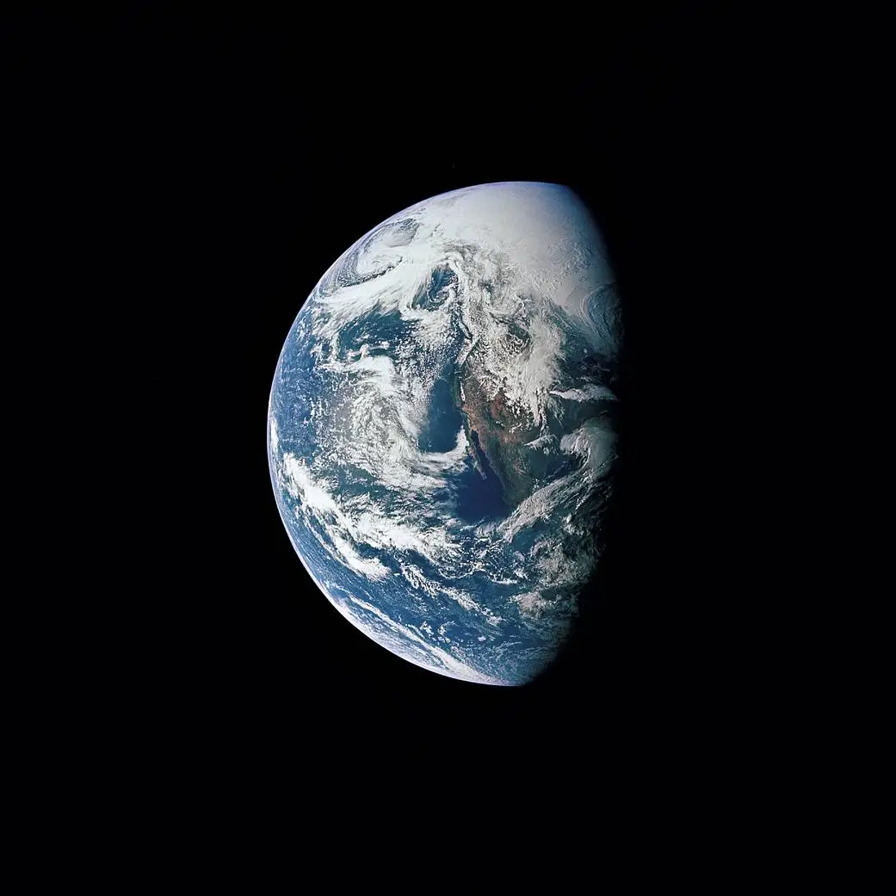

Earth

Overview
Earth is the third planet from the Sun and the only astronomical object known to harbor life. About 29% of Earth's surface is land consisting of continents and islands. The remaining 71% is covered with water, mostly by oceans, seas, and lakes.
Interesting Facts
- Earth is the only planet in our solar system with liquid water on its surface.
- Earth is the only planet not named after a Roman or Greek god.
Quick Facts
- Type: Rocky Planet
- Distance from Earth: 0 miles
- Size: 7,926 miles in diameter
- Discovery: Our home planet; first photographed as a whole from space in the 1960s